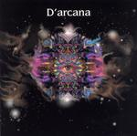

| Artist: | D'Arcana |
| Title: | D'Arcana |
| Label: | Lemuria Music 000401 |
| Length(s): | 56 minutes |
| Year(s) of release: | 2004 |
| Month of review: | [02/2006] |
| 1) | Miles Away | 3.18 |
| 2) | Picture This | 2.35 |
| 3) | Once In A Lifetime | 2.52 |
| 4) | Changes | 9.05 |
| 5) | Pastozaporius | 3.02 |
| 6) | Set In Stone | 6.48 |
| 7) | Nightshade | 3.13 |
| 8) | Let It Out | 3.31 |
| 9) | S.u.a.p.y.g. | 5.56 |
| 10) | Windows | 1.45 |
| 11) | Ancient Future | 14.00 |
On Picture This, the vocals move more into the direction of Adrian Belew, while the guitar and keyboards move more into psyche realms. This is indeed space rock, but of the plaintive type, not the one that rambles on without looking. Like its predecessor, Once In A Lifetime is rather short. It operates in an acoustic mode with slow moving keyboards added. There is something very languid about these tracks. A bit hallucinating even. The songs themselves are good, even if a bit vague. And I guess the underproducedness works for this type of music. The arranged doubled and tripled vocals remind much of modern Hammill.
Changes is the first major track, almost ten minutes in length. I wonder whether the style of the short tracks continues. At first, at least, it does. The vocal melodies and feel are very sixties, only past the two minute mark when we come to the chorus, does the music power up a bit. The vocal harmonies may remind some of Crosby, Stills and Nash, and there is even some slide guitar. The guitar 'solo' in the middle is acoustic not electric. Concludingly, this is not an epic, but a longer song in the style of the first three tracks.
Pastozaporius is the only song not written by Tausig, but by Shelby Snow. This is a rather stop-and-start like track with plenty of focus on drums and bass. Not very appealing though. For that it needs more groove and fire. This is too relaxed (for the offered melodic content). At the end, a psyche guitar comes in, too meander.
Set In Stone is the first rock song. It has plenty of distortion in the guitar, while the vocals stay in Hammill mode. The music has that sloppy, noisy feel of Hawkwind type space rock, and positively thunders on at times. The guitars even turn rhythmic at times, making for an even heavier sound, with some furious soloing. Thus, in the middle we do get some more variation. Still, the song does not appeal to me much: I do not see what they want to get across, and melodically there is not much here either. A fickle song, but it does get more likable towards the end.
Nightshade is back to soft songs, a dreamy ballad even. The sound is much clearer here, which makes the melodies come out all the better. The main accompaniment are the vibes. In the middle, the vocals are doubled and tripled, and the distortion guitar rings out, but only in the back.
Let It Out is a typical Hammill song, with a very good vocal melody. It does not need more, nor does it get any. One wonders what S.u.a.p.y.g. might stand for, but maybe time will tell. Not the lyrics, because it is an instrumental one, and more like a live improv than a composition. Mainly guitar and percussion, it does strike a chord with me.
Windows is a very short, somewhat like a lullabye in the vein of Let It Out. Ancient Future is by far the longest song here. It opens in the acoustic vein, a mode which I prefer over the distortion rich one. Main reference is again Hammill. The spooky guitars may remind a bit of Pink Floyd, but not overly much. Just before the four minute mark, the music rises in intensity. This is a good thing. I wish they'd done that more often, instead of simply throwing in the noise guitar. Indeed, sequencers do it much better. Unfortunately, they do not keep that going, but go on a tangent. Halfway, the music even gets to be optimistic. The last one third of the song, the music builds up again in psyche style, but of the symphonic kind. Then we come back to the acoustic vocal parts. This song has its moments, but does not stand out.